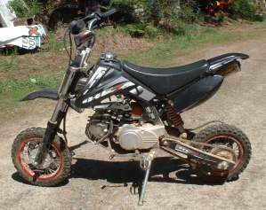
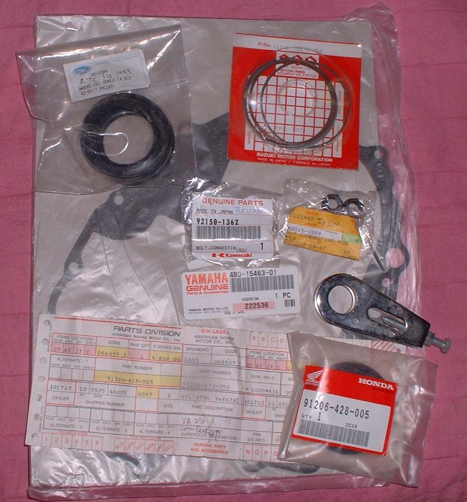

The shop does not stock the part, or the maker says it is obsolete. Small and imported bikes often have no parts supply, no workshop manual and no dealer. The owner has to find parts and do the dealer's work.
Is it safe to ride?
It depends on the part. Do not ride with a missing or worn part in the brakes, steering, wheels or fuel system.
Quick checks first
- Note the make, model, year, engine number and frame number.
- Take the old part to the shop so it can be compared.
- Look for part numbers on the part itself.
Diagnose it step by step
1Does the maker or an agent list the part?
- Yes: buy OEM. It will fit exactly.
- No: go to step 2.
2Is the part a common wear part (filter, plug, piston, valve, gasket, chain)?
- Yes: look for an aftermarket brand. Ask other owners which works. See Choose where to buy motorcycle parts.
- No: go to step 3.
3Is the bike old?
- Yes: look for old stock, online sellers and scrapyards. Check rubber parts for age.
4Is it an imported bike?
- Yes: look for whole assemblies (carburettor, clutch, magneto). These often fit several makes. Piston, ring and cylinder may only come as a set. Match shape and size with the old part before buying.
5Not found anywhere?
- Measure the old part and ask a machine shop. An engine from a similar bike may fit and costs less than a rebuild.
Causes, most likely first
| Cause | How to confirm | Fix |
|---|---|---|
| Bike maker has dropped the model | Maker says obsolete | Aftermarket, used or old stock |
| Small makers sell only assemblies | Catalogue lists whole units | Buy the assembly |
| Rare bike | Few made | Used parts, machine shop |